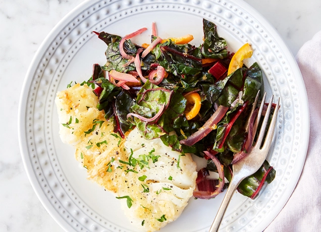

Pan-Fried Cod with Orange and Swiss Chard

Description
News flash: Cooking seafood doesn’t have to be tricky and time-consuming. This pan-fried cod with orange and Swiss chard goes from the fridge to the table in 30 minutes. Dinner has never been easier. In fact, you can totally whip this up on a Wednesday. (We believe in you.)
Ingredients
- Four 6-ounce cod fillets
- Salt and freshly ground black pepper
- 1 cup all-purpose flour
- ½ teaspoon cayenne pepper
- 4 tablespoons extra-virgin olive oil
- 1 red onion, thinly sliced
- 1 orange, halved and thinly sliced
- ¼ cup chopped fresh parsley, plus more for garnish
- 2½ cups chopped Swiss chard
- Orange wedges, for serving
Directions
- Season each cod fillet on both sides with salt and pepper. Put the flour in a large bowl and stir in the cayenne pepper. Dredge each piece of cod thoroughly in the flour.
- In a large sauté pan, heat the olive oil over medium heat. Add the cod and pan-fry until browned and fully cooked, about 3 to 4 minutes on each side.
- Remove the cod from the pan and drain all but 1 tablespoon of oil. Add the onion and orange, and sauté until the onion is tender, 4 to 5 minutes. Stir in the parsley and Swiss chard, and cook until tender, 3 to 4 minutes more.
- Transfer each piece of cod to a plate and divide the onion, orange and Swiss chard mixture evenly among the plates. Garnish with more parsley and orange wedges. Serve immediately.